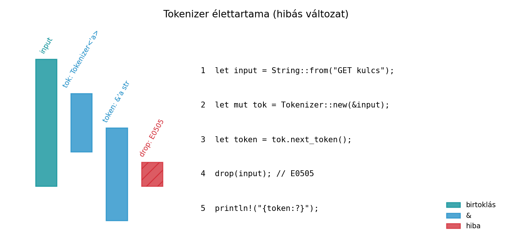

C++-ban gyakori, hogy egy osztály referenciát vagy nézetet tárol,
például std::string_view taggal, hogy elkerülje a
felesleges másolást. Ez a minta viszont a programozóra bízza az
élettartam-kezelést: ha a hivatkozott std::string hamarabb
felszabadul, a nézet érvénytelenné válik, és a hiba csak futásidőben,
gyakran nehezen reprodukálható módon jelentkezik. A Rust ebben a
helyzetben is a fordítóra bízza az ellenőrzést: ha egy struktúra
referenciát tartalmaz, a struktúra típusában explicit
élettartam-paraméterrel kell rögzíteni a kapcsolatot. Ebben az
alfejezetben azt vizsgáljuk, hogyan tárolunk referenciát struktúrában,
mit jelent a 'static, és milyen tervezési döntéseket
hozzunk birtokolt és kölcsönzött adatok között.
Definíció. Élettartam-paraméteres
struktúra: olyan struct, amely legalább egy referencia
típusú mezőt tartalmaz. A struct deklarációjában fel kell
venni egy élettartam-paramétert, és a referencia típusában használni
kell:
struct Parser<'a> {
input: &'a str,
}Az 'a itt nem egy konkrét, ismert élettartam, hanem egy
paraméter, amely a Parser példányosításakor
kötődik ahhoz az élettartamhoz, ameddig a kölcsönzött input
érvényes. Ugyanezt az élettartamot az impl blokkon is fel
kell tüntetni:
impl<'a> Parser<'a> {
fn new(input: &'a str) -> Self {
Self { input }
}
}Szabály. A struktúra élettartama nem haladhatja meg a benne tárolt referenciák élettartamát; a borrow checker ezt a struktúra típusában szereplő élettartam-paraméter segítségével ellenőrzi. Ha a struktúrát olyan helyen hozod létre, ahol a kölcsönzött adat már nem él elég sokáig, a kód nem fordul le.
Definíció. A 'static élettartam a
teljes program futásidejére érvényes élettartam. Két gyakori jelentését
különböztessük meg:
&'static str: olyan referencia, amely a program
teljes élettartama alatt érvényes, például a forráskódba írt
string-literalek ("hello").T: 'static korlát: azt jelenti, hogy a T
típus nem tartalmaz nem-'static referenciákat,
tehát minden benne tárolt referencia 'static élettartamú,
vagy a típus teljesen birtokolja az adatait. Fontos: ez
nem azt jelenti, hogy az adott érték örökké él; egy
String példány átadható T: 'static korlátú
függvénynek, pedig a függvény visszatérése után felszabadul. A korlát
csak a típusban lévő esetleges referenciákra vonatkozik.A T: 'static korlát akkor hasznos, ha egy értéket hosszú
életű háttérszálra vagy aszinkron taskra akarunk átadni; ezt a Szálak, Send és Sync: data race fordítási időben
kizárva és a Future-ök és async/await: mi
történik a motorháztető alatt alfejezetekben fogjuk használni.
Önhivatkozó struktúrák. Előfordulhat, hogy egy struktúra egyik mezője a másik mezőjére mutatna. Maga a típusdeklaráció szabályos, lefordul:
struct SelfRef<'a> {
data: String,
view: &'a str,
}A gond az értékek létrehozásánál jelentkezik. A
view-nak a data-ra kellene mutatnia, de a
data-t a struktúrába mozgatjuk, a referenciát pedig a
mozgatás előtt kellene felvenni:
Kódblokk — önálló példa · szándékosan hibás
· várt hiba: E0505 és E0515
struct SelfRef<'a> {
data: String,
view: &'a str,
}
fn make<'a>() -> SelfRef<'a> {
let data = String::from("GET kulcs");
let view = &data[..3];
SelfRef { data, view } // E0505: a data-t mozgatnánk, miközben a view kölcsönzi
// E0515: a visszaadott érték lokális változóra hivatkozik
}Három különálló probléma van itt, amelyeket érdemes szétválasztani.
(1) Ownership és aliasing: a view a
data kölcsönzése, ezért a data a kölcsönzés
alatt nem mozgatható a struktúrába, és a borrow checker a struktúra
élettartam-paraméterét ('a) semmilyen lokális változóhoz
nem tudja kötni, amely a struktúrát túlélné. (2) Inline mező
címe: ha egy mező a struktúra saját memóriájára
mutatna (például egy [u8; 16] tömbre), a struktúra minden
mozgatásakor az a cím megváltozna, és a mutató lógó lenne. (3)
Kupacpuffer címe: a String adatai a
kupacon vannak, és a String mozgatásakor ez a cím
nem változik; a gyakorlatban egy ilyen nézet a mozgatást
túlélné, de a fordító ezt nem tudja bizonyítani, és a data
módosítása (például push_str reallokációval) a nézetet így
is érvénytelenítené.
A stabil megoldás általában az, hogy a nézetet nem tároljuk, hanem mindig újra kiszámítjuk, vagy birtokolt adatot és indexet használunk:
struct Parsed {
data: String,
verb_end: usize, // a view helyett: a data[..verb_end] tartomány
}
impl Parsed {
fn verb(&self) -> &str {
&self.data[..self.verb_end]
}
}A haladó Pin-alapú megoldást később, az aszinkron
fejezetben tárgyaljuk, itt csak a problémát említjük.
A következő C++ kód egy std::string_view-t tároló
osztályt mutat:
#include <string>
#include <string_view>
struct Parser {
std::string_view input;
explicit Parser(const std::string& s) : input(s) {}
};
Parser make_parser() {
std::string local = "GET key";
return Parser(local); // veszély: local felszabadul, input függő lesz
}A Rust-megfelelő:
struct Parser<'a> {
input: &'a str,
}
impl<'a> Parser<'a> {
fn new(input: &'a str) -> Self {
Self { input }
}
}
// 1. HIÁNYZÓ ÉLETTARTAM: nincs bemeneti referencia, amelyhez a kimenetet kötni lehetne.
// error[E0106]: missing lifetime specifier
fn make_parser() -> Parser<'_> {
let local = String::from("GET key");
Parser::new(&local)
}
// 2. LOKÁLIS ADAT VISSZAKÖLCSÖNZÉSE: van bemeneti referencia (így az élettartam megvan),
// de a visszaadott érték a függvény lokális változójára hivatkozik.
// error[E0515]: cannot return value referencing local variable `local`
fn make_parser_from(_hint: &str) -> Parser<'_> {
let local = String::from("GET key");
Parser::new(&local)
}A két hiba különböző okú, ezért külön hibakódot kap (a kimenetek Rust
1.99.1-ből): bemeneti referencia nélkül a fordító már az aláírásnál
megáll (E0106, a javaslat: 'static vagy
tulajdonolt érték visszaadása); ha van bemenet, de a visszaadott
Parser a lokális local-ra mutat,
E0515 jelzi, hogy a lokális változó a függvény végén
megszűnik. Az E0597 egy harmadik eset: a kölcsönzött érték
egy belső blokkban ér véget, miközben a referencia a blokk után
is él:
let p;
{
let local = String::from("GET key");
p = Parser { input: &local }; // error[E0597]: `local` does not live long enough
}
println!("{}", p.input);A különbség: a C++-fordító nem figyelmeztet a függő nézetre, a
Rust-fordító viszont már a make_parser definíciójakor hibát
ad. A három hibakód (E0106, E0515,
E0597) nem cserélhető fel egymással: mindegyik más hibát
jelöl (hiányzó élettartam, lokális visszakölcsönzés, rövidebb hatókör),
a pontos üzenetszöveg viszont verziófüggő.
Munkakönyvtár: ~/rust-labor/rkv/
A szöveges parancsok (GET <kulcs>,
SET <kulcs> <érték>, stb.) soronkénti
feldolgozásának szemléltetésére szolgál egy olyan tokenizáló, amely a
bemeneti sort nem birtokolja, csak nézeteket ad vissza. Ez a labor egy
Tokenizer<'a> struktúrát valósít meg az
rkv-core crate-ben, a nézet-alapú tokenizálás
szemléltetésére (a szerver nem ezt, hanem a Command
FromStr-jét használja, lásd lent).
Továbbvitt eredmény. Ez a
Tokenizer<'a> típus az
rkv-core/src/tokenizer.rs fájlban jelenik meg, a
nézet-alapú (nem birtokló) tokenizálás szemléltetésére. Nem
része a hálózati szerver feldolgozási útjának: az Az rkv hálózati szerver: TCP, protokoll, kecses
leállás szerver a Command FromStr-jét
használja, mert a tokenizáló whitespace-összevonása nem felel meg a
szigorú protokollnak (a SET értéke szóközt tartalmazhat, és
az elválasztó pontosan egy szóköz).
rkv-core/src/tokenizer.rs fájlt:Kódblokk — fájl: rkv-core/src/tokenizer.rs ·
művelet: új fájl · ellenőrzés: a 2. lépés után
cargo build -p rkv-core
/// Szöveges parancssorokat tokenizáló nézet.
///
/// A `Tokenizer` nem birtokolja a bemenetet, csupán egy `&str`-re
/// mutató nézet. A `next_token` hívások során a belső `rest`
/// mezőt léptetjük a bemenetben.
#[derive(Debug)]
pub struct Tokenizer<'a> {
/// A bemenet fennmaradó része.
rest: &'a str,
}
impl<'a> Tokenizer<'a> {
/// Új tokenizálót hoz létre a megadott bemeneti sorra.
pub fn new(input: &'a str) -> Self {
Self { rest: input }
}
/// Visszaadja a következő, szóközzel elválasztott tokent,
/// vagy `None`-t, ha nincs több.
///
/// A visszaadott token élettartama a bemenet (`'a`) élettartamához
/// kötött, nem a `&mut self` kölcsönzéséhez, így a tokenizáló
/// tovább használható a token független feldolgozása közben is.
pub fn next_token(&mut self) -> Option<&'a str> {
self.rest = self.rest.trim_start();
if self.rest.is_empty() {
return None;
}
let end = self
.rest
.find(char::is_whitespace)
.unwrap_or(self.rest.len());
let token = &self.rest[..end];
self.rest = &self.rest[end..];
Some(token)
}
}rkv-core/src/lib.rs
fájlhoz:Kódblokk — fájl: rkv-core/src/lib.rs · művelet:
beillesztés a többi pub mod sor mellé · ellenőrzés:
cargo build -p rkv-core
pub mod tokenizer;rkv-core/tests/tokenizer.rs fájlba:Kódblokk — fájl: rkv-core/tests/tokenizer.rs ·
művelet: új fájl · ellenőrzés:
cargo test -p rkv-core --test tokenizer → 2 sikeres
teszt
use rkv_core::tokenizer::Tokenizer;
#[test]
fn tokenizálja_a_parancsot() {
let mut tok = Tokenizer::new("SET kulcs ertek");
assert_eq!(tok.next_token(), Some("SET"));
assert_eq!(tok.next_token(), Some("kulcs"));
assert_eq!(tok.next_token(), Some("ertek"));
assert_eq!(tok.next_token(), None);
}
#[test]
fn kezeli_a_szóközöket() {
let mut tok = Tokenizer::new(" LIST prefix ");
assert_eq!(tok.next_token(), Some("LIST"));
assert_eq!(tok.next_token(), Some("prefix"));
assert_eq!(tok.next_token(), None);
}cargo test -p rkv-coreVárható kimenet: mindkét teszt sikeres, mert a tokenizáló a
trim_start és a find(char::is_whitespace)
segítségével átugorja a vezető szóközöket, és a tokenhatárt az első
szóköznél állapítja meg.
A next_token szignatúrájában fontos az explicit
'a a visszatérési típusban. Ha ezt elhagynánk, az elision
szabály a &mut self élettartamához kötné a visszaadott
referenciát, ami túlságosan szigorú lenne: a token nem maradhatna
használatban, miközben a tokenizálót tovább akarjuk hívni. Az explicit
annotáció megőrzi a bemeneti élettartamot.
A kölcsönzés a tényleges utolsó használatig tart (NLL). Ha a
tok-ot és a token-t a drop(input)
előtt használjuk utoljára, a bemenet eldobása szabályos:
Kódblokk — önálló példa (az rkv-core-ra
függőségként építő crate-ben) · ellenőrzés: lefordul, kimenete
Some("GET")
use rkv_core::tokenizer::Tokenizer;
fn main() {
let input = String::from("GET kulcs");
let mut tok = Tokenizer::new(&input);
let token = tok.next_token();
println!("{token:?}");
drop(input); // OK: a tok és a token utolsó használata már megtörtént
}Ha viszont a tokent az eldobás után is használnánk, a bemenetet még kölcsönzik, amikor mozgatni (eldobni) akarjuk:
Kódblokk — önálló példa · szándékosan hibás
· várt hiba: E0505
(cannot move out ofinputbecause it is borrowed)
use rkv_core::tokenizer::Tokenizer;
fn main() {
let input = String::from("GET kulcs");
let mut tok = Tokenizer::new(&input);
let token = tok.next_token();
drop(input); // E0505: a token még él
println!("{token:?}");
}Az ábra a hibás változatot mutatja; a sávok a kölcsönzések tényleges
használati tartományát jelölik. A tok kölcsönzése a 3.
sorban véget ér (utolsó használat), a token-é viszont az 5.
sorig tart, ezért ütközik a 4. sor drop-jával:

A Tokenizer és a belőle kinyert tokenek is az
input élettartamához kötöttek. A drop(input)
csak akkor hibás, ha utána még használjuk a tokenizálót vagy egy tokent;
a puszta létezésük (használat nélkül) nem akadályozza meg az
eldobást.
Amikor struktúrában adatot tárolunk, alapvető tervezési döntés a birtokolt és a kölcsönzött forma közötti választás. A két lehetőség:
// Birtokolt: a struktúra a saját adatát tárolja.
struct OwnedConfig {
name: String,
}
// Kölcsönzött: a struktúra csak nézet a máshol tárolt adatra.
struct BorrowedConfig<'a> {
name: &'a str,
}Birtokolt (String) előnyei: - A
struktúra önállóan, a bemenettől függetlenül élhet; könnyű visszaadni,
eltárolni gyűjteményben, átadni más szálakra. - Nincs
élettartam-paraméter a típusban, így az API egyszerűbb.
Hátránya: az adat tulajdonolt másolata kell hozzá. A másolás
költsége azonban nem szükségszerű, hanem a tényleges átalakítástól függ:
ha a hívónak már van String-je, átadhatja a tulajdonjogot
(String paraméter, impl Into<String>),
másolat nélkül; ha csak &str-je van, a másolat az az
ár, amelyet a bemenettől független tulajdonért fizetünk.
Kölcsönzött (&'a str) előnyei: -
Nincs másolás, gyors, különösen nagy bemeneteknél vagy gyakori
hívásoknál. - A hívó ellenőrzését a borrow checker garantálja, így nincs
dangling pointer.
Hátránya: a struktúra élettartama a bemenethez kötött. A kölcsönzött
adat eltárolása nem tilos, csak az eltárolt érték élettartama
kötött: a Parser<'a> addig él, ameddig a bemenet,
tehát visszaadható és eltárolható egy olyan hatókörben, amelynél a
bemenet hosszabb ideig él. A hosszú életű, bemenettől független
tulajdonhoz (például szerver-kapcsolati állapothoz) birtokolt adat
kell.
Az API-irány konzisztens az API-tervezés Rustban:
irányelvek és ergonómia paramétertípus-szabályával: a konstruktor
&str-t fogad, ha a típus nézet
(Parser::new(input: &'a str)), és tulajdonolt értéket
(String vagy impl Into<String>), ha a
típus önálló tulajdonos
(OwnedParser::new(input: impl Into<String>)):
struct Parser<'a> { input: &'a str }
impl<'a> Parser<'a> {
fn new(input: &'a str) -> Self { Self { input } } // nézet: nincs másolat
}
struct OwnedParser { input: String }
impl OwnedParser {
fn new(input: impl Into<String>) -> Self { // tulajdon: a hívó dönt az átadásról
Self { input: input.into() }
}
}A gyakorlati irányelv: ha a struktúra rövid életű nézet, akkor kölcsönzött; ha hosszú életű, önálló érték, akkor birtokolt. Parser, tokenizáló, konfiguráció-validátor esetén a kölcsönzött forma idiomatikus. Egy szerver kapcsolati állapotát viszont általában birtokolt adattal érdemes tárolni, mert a kapcsolat hosszan él.
Hiányzó élettartam-paraméter a struktúrán. Ha a
struct Parser { input: &str } deklarációt használod, a
fordító E0106 hibát ad: „missing lifetime specifier”. A javítás:
struct Parser<'a> { input: &'a str }.
A 'static félreértése. A
T: 'static korlát nem követeli meg, hogy az érték örökké
éljen. Például a következő kód lefordul:
fn take_static<T: 'static>(_x: T) {}
let s = String::from("hello");
take_static(s); // OK, mert a String birtokol, nincs benne nem-'static referenciaTúl szigorú élettartam a metódus visszatérési
típusában. Ha a next_token szignatúrája
fn next_token(&mut self) -> Option<&str>,
a visszakapott token élettartama a &mut self
kölcsönzéséhez kötődik, nem a bemenetéhez. Ez a különbség akkor okoz
gondot, ha a tokent a tokenizáló további hívása után is használni
szeretnénk. A megoldás az explicit 'a a visszatérési
típusban.
Klónozás mindenhol. A borrow checker hibáit sok
kezdő Rust-fejlesztő azzal kerüli meg, hogy mindenhol
String-et klónoz. Ez felesleges másolást és gyengébb
teljesítményt eredményez. Törekedj a kölcsönzött nézetek használatára,
ahol a struktúra rövid életű.
Vizsgáld meg a következő kódot:
struct View<'a> {
s: &'a str,
}
fn create_view() -> View<'_> {
let text = String::from("data");
View { s: &text }
}Válaszodban indokold, melyik szabály sérül, és mi a hibaüzenet
lényege (melyik hibakód: E0106, E0515 vagy
E0597?).
Az alábbi C++ tokenizáló std::string_view-t használ:
#include <string_view>
struct Tokenizer {
std::string_view rest;
explicit Tokenizer(std::string_view input) : rest(input) {}
std::string_view next_token() {
while (!rest.empty() && rest.front() == ' ') rest.remove_prefix(1);
if (rest.empty()) return {};
size_t end = 0;
while (end < rest.size() && rest[end] != ' ') ++end;
auto token = rest.substr(0, end);
rest.remove_prefix(end);
return token;
}
};Írd át ezt a Rust Tokenizer<'a>-ra, és magyarázd
el, miért biztonságosabb a Rust-verzió élettartam-kezelése.
Egészítsd ki a laborban elkészített Tokenizer-t egy
rest_of_line(&mut self) -> Option<&'a str>
metódussal, amely a vezető szóközök után a sor maradékát adja vissza
(például a SET értékéhez), és írj teszteket: üres bemenet,
csak szóközök, többszörös szóközök, tabulátor, valamint egy
GET kulcs parancs tokenizálása. Ellenőrizd a
cargo test -p rkv-core paranccsal.
Az rkv-szerver egy kapcsolatánál a bejövő sorokat egy pufferben
dolgozzuk fel. Tegyük fel, hogy egy Connection struktúrát
tervezel:
String, akkor a parancs-tokenizáló nézeteket
használhat.Connection-t gyakran mozgatják, vagy a
puffert más struktúrákba kell átadni, milyen érvek szólnak a birtokolt
String mellett?Indokold a választásodat a birtokolt vs. kölcsönzött szempontok alapján, és írd le, milyen élettartam-következményei lennének a kölcsönzött megoldásnak.
A kód nem fordul le, de nem a borrow checker, hanem már a szignatúra
miatt: a View<'_> visszatérési típus élettartamát
nincs mihez kötni (nincs bemeneti referencia, az elision nem ad
élettartamot), ezért E0106: missing lifetime specifier. Ha
a függvény kapna egy &str paramétert
(fn create_view(_h: &str) -> View<'_>), akkor
E0515 jönne (lokális text-re hivatkozó érték
visszaadása). Javítás: a View birtokolja az adatot
(String mező), vagy a függvény a bemenetet paraméterként
kapja:
fn create_view(text: &str) -> View<'_> { View { s: text } }.
A Rust-megfelelő a laborban bemutatott
Tokenizer<'a>. A fő különbség: a C++-osztály nem
rögzíti az élettartamot a típusban, és a hívó felelőssége, hogy a
std::string_view mögötti adat éljen. A Rust-struktúra az
<'a> paraméterrel kikényszeríti, hogy a
Tokenizer ne élje túl a bemenetet, és a
next_token visszatérési típusában explicit 'a
jelzi, hogy a token is ugyanahhoz az élettartamhoz kötött.
A rest_of_line a már feldolgozott tokenek után hátralévő
szöveget adja, és a tokenizálót kimerítettnek jelöli. A visszaadott
szelet a bemenet ('a) élettartamához kötött:
impl<'a> Tokenizer<'a> {
/// A vezető szóközök utáni maradék sor; `None`, ha nincs több szöveg.
pub fn rest_of_line(&mut self) -> Option<&'a str> {
let rest = self.rest.trim_start();
self.rest = "";
if rest.is_empty() { None } else { Some(rest) }
}
}A tesztek (mind az öt kért eset, plusz a rest_of_line;
rustc 1.99.1, scratch crate-ben futtatva: 6 sikeres teszt):
#[test]
fn üres_bemenet() {
assert_eq!(Tokenizer::new("").next_token(), None);
}
#[test]
fn csak_szóközök() {
assert_eq!(Tokenizer::new(" ").next_token(), None);
assert_eq!(Tokenizer::new(" ").rest_of_line(), None);
}
#[test]
fn többszörös_szóközök() {
let mut tok = Tokenizer::new("SET k v");
assert_eq!(tok.next_token(), Some("SET"));
assert_eq!(tok.next_token(), Some("k"));
assert_eq!(tok.next_token(), Some("v"));
assert_eq!(tok.next_token(), None);
}
#[test]
fn kezeli_a_tabulátorokat() {
let mut tok = Tokenizer::new("DEL\tkulcs");
assert_eq!(tok.next_token(), Some("DEL"));
assert_eq!(tok.next_token(), Some("kulcs"));
assert_eq!(tok.next_token(), None);
}
#[test]
fn get_parancs_és_sor_maradéka() {
let mut tok = Tokenizer::new("GET kulcs");
assert_eq!(tok.next_token(), Some("GET"));
assert_eq!(tok.next_token(), Some("kulcs"));
assert_eq!(tok.next_token(), None);
let mut tok = Tokenizer::new("SET k a b");
tok.next_token();
tok.next_token();
assert_eq!(tok.rest_of_line(), Some("a b"));
}A Connection puffert célszerű birtokolt
String-ként tárolni, mert a kapcsolat hosszú életű, és a
puffert többször is módosítani, kiüríteni, valamint akár más
struktúráknak átadni szükséges. A kölcsönzött &str
tárolása azt jelentené, hogy a Connection élettartama a
bemeneti adat élettartamához kötött, ami a szerver esetében a socketből
olvasott adatokra nem alkalmazható, mert azok a feldolgozás után
felszabadulnak. A birtokolt puffer mellett az egyes sorokat feldolgozás
előtt Tokenizer::new(&buffer) módon nézetként lehet
tokenizálni, így a tokenizálás gyors, másolásmentes marad.
Ebben az alfejezetben megismerkedtünk az élettartam-paraméteres
struktúrákkal: ha egy struct referenciát tárol, a
típusdeklarációban <'a> paramétert kell használni, és
a referencia típusában jelölni kell. A 'static két
jelentését tisztáztuk: &'static str statikus
referencia, míg T: 'static típuskorlát, amely a típusban
lévő referenciákra vonatkozik, nem az érték élettartamára. Megvizsgáltuk
az önhivatkozó struktúrák problémáját, és a birtokolt versus kölcsönzött
adatok közötti tervezési döntéseket. A laborban létrehoztuk az
rkv-core/src/tokenizer.rs fájlban a
Tokenizer<'a> típust, amely a szöveges parancsokat
&str nézetekkel tokenizálja, a szigorú protokoll miatt
az Az rkv hálózati szerver: TCP, protokoll, kecses
leállás nem ezt, hanem a Command::from_str-t használja.
A T: 'static korlátot a Szálak, Send és
Sync: data race fordítási időben kizárva és a Future-ök és async/await: mi történik a motorháztető
alatt alfejezetekben fogjuk alkalmazni. A legfontosabb szabály: a
struktúra élettartama nem haladhatja meg a benne tárolt referencia
élettartamát, és a metódusok visszatérési típusánál explicit
élettartam-annotációval őrizzük meg a bemeneti élettartamot.
'static és a
struktúrákban tárolt referenciák hátteréhez.rkv-core crate- és modulneveit a
könyv korábbi alfejezetei rögzítik.